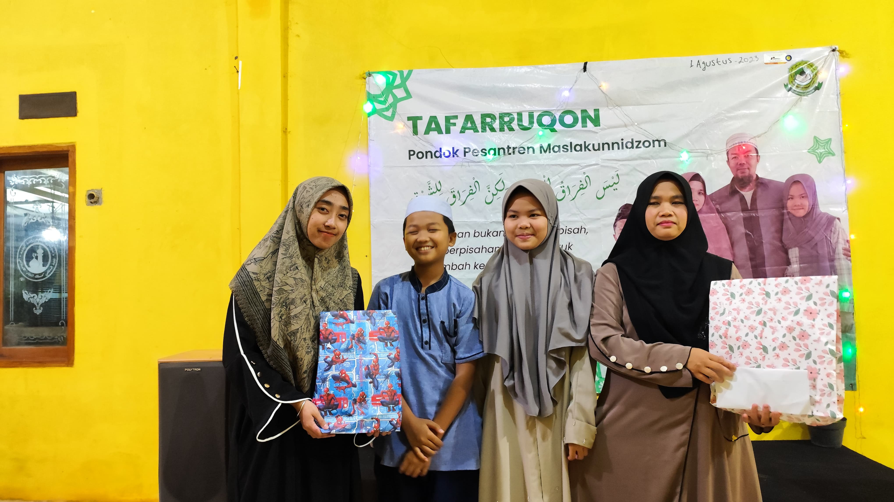
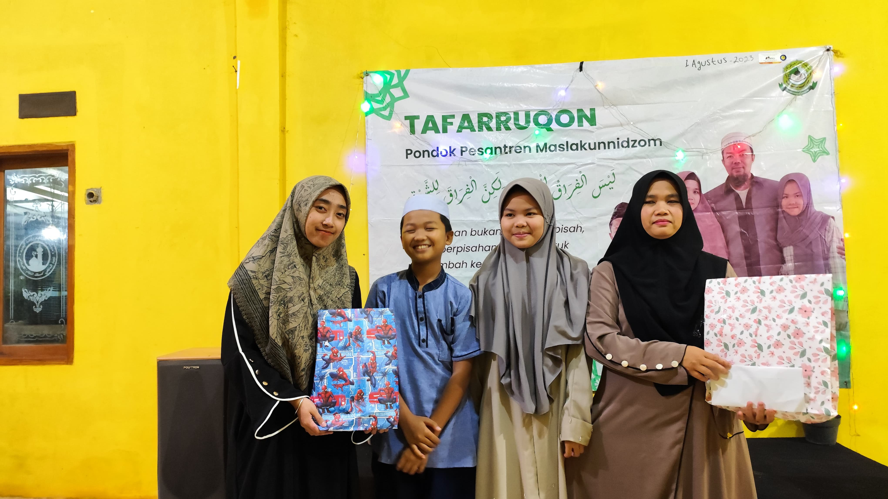

Pondok Pesantren Maslakunnidzom merupakan lembaga pendidikan Islam yang berkomitmen mencetak generasi Qur'ani yang berakhlak mulia dan berilmu. Berdiri dengan semangat dakwah dan tarbiyah, pesantren ini menjadi tempat para santri mendalami ilmu agama, memperkuat hafalan Al-Qur'an, serta membentuk karakter yang tangguh dan mandiri.
Dengan perpaduan kurikulum salafiyah dan modern, Maslakunnidzom menghadirkan suasana pembelajaran yang seimbang antara ilmu agama, keterampilan hidup, dan wawasan kebangsaan. Para santri dibimbing langsung oleh para ustadz dan asatidzah yang kompeten dan penuh dedikasi dalam membina akhlak serta spiritualitas.
Kami percaya bahwa masa depan umat Islam ada di tangan generasi yang berilmu, berakhlak, dan siap mengabdi. Oleh karena itu, Pondok Pesantren Maslakunnidzom terus berinovasi dalam membina dan mendampingi santri menuju pribadi yang shalih dan cerdas.
 

إن مشقة الطاعة تذهب ويبقى ثوابها، وإن لذة المعاصي تذهب ويبقى عقابها، كن مع الله ولا تبالي، ومد يديك إليه في ظلمات الليالي وقل: يا رب ما طابت الدنيا إلا بذكرك، ولا الآخرة إلا بعفوك ولا الجنة إلا برؤيتك
Artinya: Sesungguhnya kelelahan karena melaksanakan ketaatan akan hilang dan pahalanya akan kekal. Sedangkan kenikmatan maksiat akan lenyap dan siksaan akhiratnya bakal abadi. Maka, teruslah bersama Allah, tak usah pedulikan yang lain. Berdoalah kepada-Nya saat malam yang sunyi: “Ya Rabb, dunia ini menjadi indah jika mengingat-Mu; akhirat pun menjadi indah karena ampunan-Mu; dan surga menjadi sempurna karena bisa melihat-Mu.”
Alamat: Jl. Raya Cisaat No. 123, Sukabumi, Jawa Barat
Telp/WA: 0812-3456-7890
Email: info@maslakunnidzom.sch.id